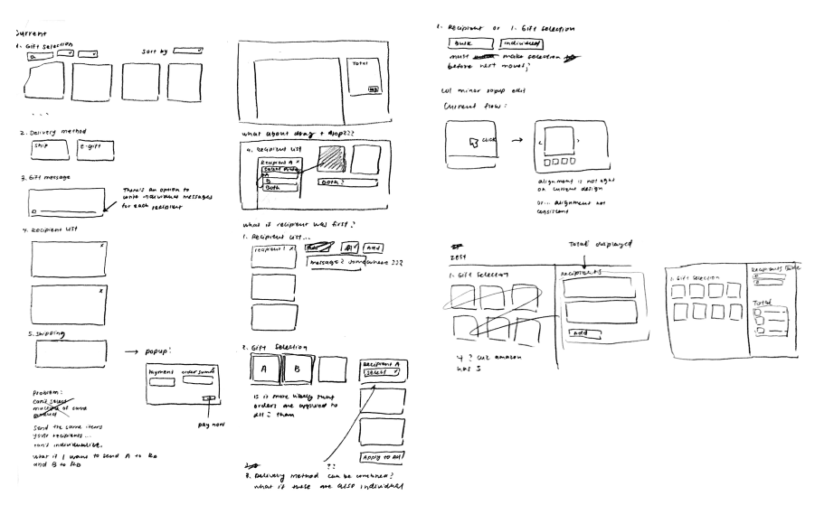
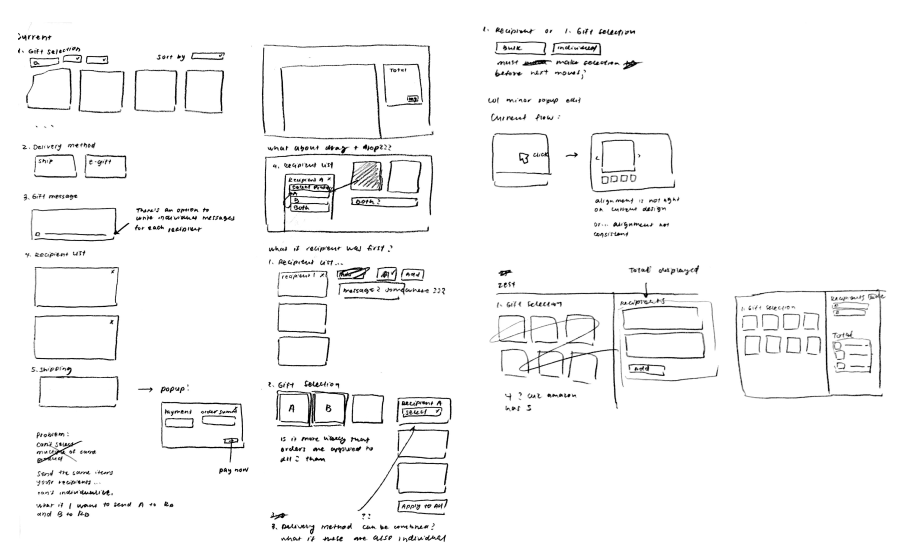
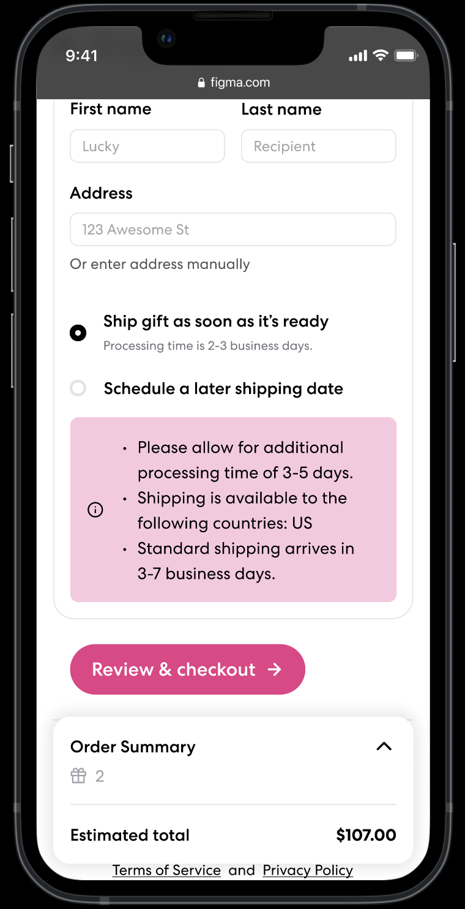
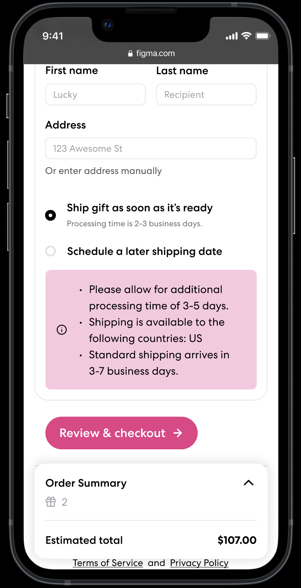

Zest Iterative Redesign

Team
Tiffany Huang
Ryan Peng
Cynthia Wang
Context
UI/UX class @ Brown University
Duration
3 weeks, ~8 hours/week
Tools
Figma
Tiffany Huang
Ryan Peng
Cynthia Wang
UI/UX class @ Brown University
3 weeks, ~8 hours/week
Figma
In this project, our team of designers worked with Zest, a B2B corporate gifting platform, to develop interface changes to accomodate a new shipping option. While most of the project was done synchronously with all team members working on the same thing, I specifically focused on communicating with our client and working on the hi-fi Figma.
While users of Zest's gifting platform were able to choose between shipping gifts to individual addresses and sending as e-gifts, there was no option to deliver all gifts to one address. Users would have to call customer service in order to do so.
Each team member brainstormed two end-to-end flows for possible implementations of a bulk shipping process. While ideating, many key questions arose:
 

After sketching, we worked synchronously to create a lo-fi wireframe. Our key design decisions were as follows:
Afterwards, we received critique from around 20 other students, as well as our instructor, Vanessa Cho, and our client, Christine Pun--the founding designer at Zest. The most important insight we gained was that our decision of breaking shipping methods into two with a dropdown instead of having three clear options may be confusing or unintuitive for new users. (Why are there two options under one shipping method?)
So, in the hi-fi prototype, we took this into account and redesigned the delivery method section!
Similarly to how we did the wireframes, we worked on the hi-fi prototype together, which was made easier because we were given hi-fi Figma screens from Zest to iterate on. We noted that Zest used the colors of the brand they’re working with, so we did the same in our style guide and hi-fi prototype.
 

When we presented our hi-fi prototype to Christine and Jeremy, a co-founder of Zest, they gave us some pointers for our design.

During our meeting with the founder, the main point of improvement we discussed was having the number of recipients be an editable field in the order summary, rather than something only accessible via one of the larger page sections. This would allow users to edit the number of recipients as they were ordering.
As such, we added an input field in the order summary so that users can increase or decrease the number of recipients, but set the default number of recipients to 1 so that the default total computation would be easier to understand at first glance. This would also update as users changed the number of recipients in the “Recipients” page section during the main page flow to stay consistent with the general flow.
Working on this project made me realize how seemingly small aspects of an interface, such as the layout for selecting a shipping method, could have a significant impact on how users feel as they navigate the page. Reworking our original design after learning that it could be confusing taught me to prioritize clarity and understanding over aesthetics.
Overall, designing for Zest was a wonderful learning experience, and I felt that I grew a lot as a designer!